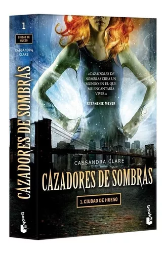

Autor: Cassandra Clare
Editorial: McElderry Books
Año de publicacion: 27 de marzo de 2007
"Cazadores de sombras: este libro introduce a los lectores a un mundo de fantasía urbana lleno de aventuras, criaturas sobrenaturales y secretos oscuros.
La trama sigue a Clary Fray, una adolescente aparentemente común que vive en Nueva York. Su vida cambia drásticamente cuando descubre que no solo existe un mundo oculto de demonios, cazadores de sombras y seres mágicos, sino que también está conectada a él de una manera inesperada. Cuando Clary presencia un asesinato cometido por demonios y su madre desaparece misteriosamente, se adentra en el mundo de los cazadores de sombras, guerreros que protegen a los humanos de las amenazas sobrenaturales.
Junto con los cazadores de sombras Jace, Alec e Isabelle, y con la ayuda de su mejor amigo Simon, Clary se enfrenta a desafíos y peligros mientras intenta descubrir la verdad detrás de su origen y las razones detrás de la desaparición de su madre. A medida que se adentra en las intrigas de este mundo secreto, Clary descubre la existencia de la Ciudad de Hueso, una base de operaciones de los cazadores de sombras, y se ve envuelta en una batalla contra las fuerzas oscuras que amenazan con desencadenar el caos.